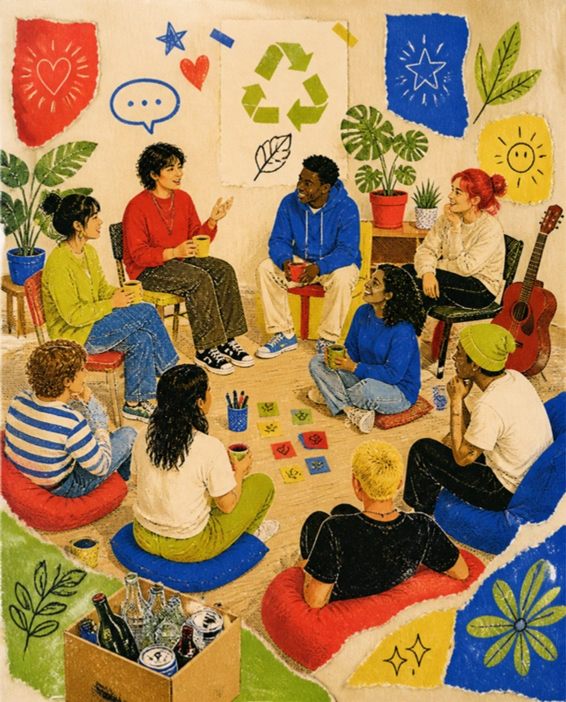
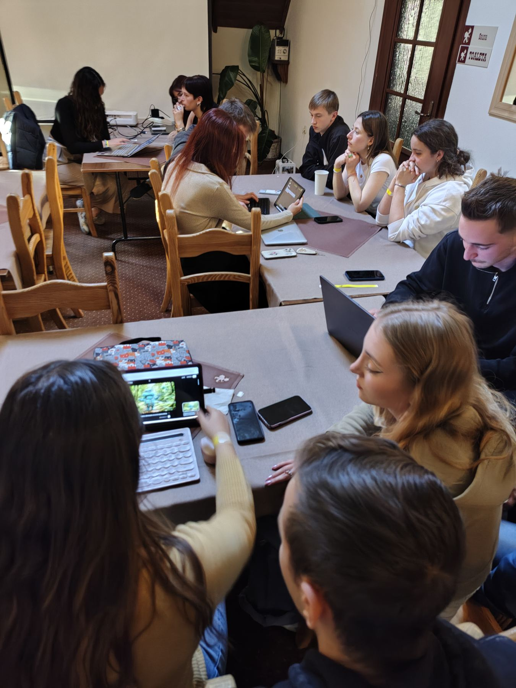

Environmental awareness
Raising awareness of environmental protection and the impact of human activity on the planet.
Sztuka Ekologii — “the art of ecology” — is a Polish foundation that promotes pro-environmental attitudes and civic responsibility through education, youth work and action for sustainable development.

Our work began with regular, weekly open meetings for young people from Jedlicze, Krosno and the surrounding area.
We talked about environmental pollution, excessive waste and local, grassroots solutions. But it quickly became clear these meetings were more than that — they became a place where young people spoke openly about their difficulties and needs.
In response, we began developing systematic youth work: supporting young people’s wellbeing and their active participation in the life of their community.
Our meetings weren’t only about the environment. They became a place where young people could finally be heard.
Through our meetings we identified challenges that shape young people’s lives in our region — and built our work around them.
Our work spans awareness, lifestyle, nature and education — always with young people at the centre.
Raising awareness of environmental protection and the impact of human activity on the planet.
Promoting everyday choices that reduce waste and keep resources in use for longer.
Supporting biodiversity protection and initiatives that help combat climate change.
Programmes for young people and educators that build the competences needed for a sustainable future.

We use non-formal education to make environmental topics understandable, practical and engaging.
Our workshops in public schools in Krosno and Jedlicze use group work, interactive exercises, simulation games and model-based activities — so participants leave with knowledge and skills they can put to work in their own communities.
We build strategic partnerships with national and international organisations, and collaborate with stakeholders worldwide.
This network gives us access to resources and opportunities that help us promote pro-environmental values both in Poland and internationally. Our work reflects the values of the Erasmus+ programme: social inclusion, youth participation, environmental education and active citizenship.
See our projects